Componentes Electrónicos
Placa de Control
La placa de control del RENABOT contiene un diseño PCB/SMD optimizado para educación.
Permite la integración de motores, sensores y actuadores de manera ordenada, con conectores accesibles y pines de expansión para futuros proyectos.
Está basada en un microcontrolador ESP32 WROOM, lo que brinda flexibilidad para programar
el robot con distintos entornos como Arduino IDE, Micro-Python o FreeRTOS.
{kind=link}
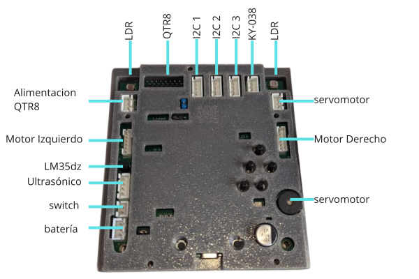
Cerebro del Renabot
Características
La placa de control del RENABOT ha sido diseñada con un ensamblaje de montaje superficial, lo que garantiza un acabado compacto, ligero y confiable. Sus dimensiones son 95 x 92 x 2 mm, cuenta con recubrimiento protector para mayor durabilidad y resistencia, y está optimizada para integrar de forma ordenada los diferentes módulos del robot en formato plug and play.
{kind=link}
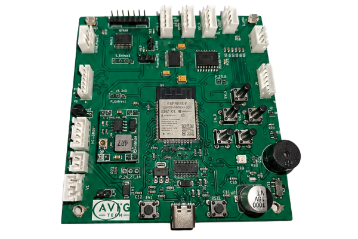
ESP32-STEM
Entre los principales elementos que incorpora se encuentran:
N |
Elemento |
Descripción |
|---|---|---|
1 |
Microcontrolador ESP32-WROOM-32 |
Módulo WiFi + Bluetooth con doble núcleo Xtensa LX6 a 240 MHz, 520 KB de SRAM y hasta 16 MB de flash externa. Control principal del RENABOT. |
2 |
Regulador de voltaje MP1584EN |
Conversor DC-DC buck que convierte 7.4 V de la batería LiPo a 5 V estables para lógica y periféricos. Alta eficiencia y hasta 3 A. |
3 |
Diodo de protección. |
Protección por polaridad inversa y mejora de eficiencia gracias a su baja caída de tensión. |
4 |
Conector USB tipo C |
Programación del ESP32 y alimentación auxiliar durante pruebas. |
5 |
Conectores Molex JST XH y PH |
Conexión rápida y segura para sensores, actuadores y expansiones. |
6 |
Multiplexor analógico 74HC4067 |
Expansión de 16 entradas analógicas/digitales usando 4 pines de control. |
7 |
Driver de motores TB6612FNG |
Controlador de motores DC de doble canal. Permite controlar dirección y velocidad mediante señales PWM desde el ESP32. Voltaje de operacion de 2.5 a 13 [v] y 1.2 [A] nominal por canal. |
8 |
Expansor GPIO PCF8574T |
Expansor de pines digitales mediante comunicación I2C, utilizado para aumentar la cantidad de entradas/salidas disponibles. |
9 |
Sensores LDR |
El sensor LDR (Light Dependent Resistor) integrado en la placa posee unas dimensiones de 5 mm de diámetro. |
10 |
Switch SMD |
Entrada para la selección de conexión con el RENA-BOT, como cliente WiFi o punto de acceso WiFi. |
11 |
Puente USB a UART |
Chip encargado de la conversión USB a comunicación serial UART, utilizado para la programación y depuración del ESP32. |
12 |
LED RGB |
LED SMD RGB. |
Sensores
El RENA-BOT incluye la siguiente lista de sensores, los cuales permiten que el robot interactúe con su entorno y ejecute diferentes actividades educativas:
Seguidor de línea

Sensor QTR8 en el RENA-BOT
El sensor QTR8 está compuesto por un arreglo de 8 sensores infrarrojos (IR) que permiten detectar el contraste entre superficies claras y oscuras.
Funciona emitiendo luz infrarroja y midiendo la cantidad de reflexión en el suelo: superficies claras reflejan más y las oscuras menos.
Características técnicas: - Tipo: arreglo de sensores IR reflectivos. - Canales: 8 independientes. - Salida: analógica. - Voltaje de operación: 3.3 V.
Uso en el RENA-BOT: - Seguimiento de trayectorias y circuitos impresos en el suelo. - Implementación de robots seguidores de línea en competiciones educativas. - Desarrollo de proyectos como laberintos y rutinas de navegación autónoma.
Sensor de distancia
{kind=link}
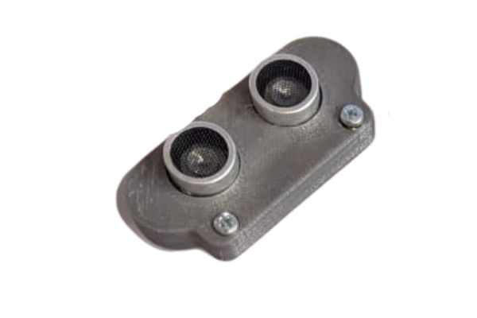
Sensor ultrasónico en el RENABOT
El sensor ultrasónico HC-SR04 mide la distancia hasta un objeto enviando un pulso ultrasónico y calculando el tiempo que tarda en reflejarse.
Características técnicas: - Rango de medición: 2 cm a 400 cm. - Precisión: ±3 mm. - Ángulo de detección: ~15°. - Voltaje de operación: 5 V.
Uso en el RENA-BOT: - Evitación de obstáculos durante el recorrido. - Implementación de sistemas de detención automática cuando un objeto se acerca.
Sensor de intensidad lumínica
{kind=link}
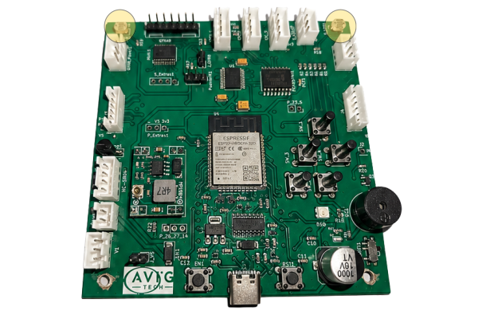
Sensor LDR
El sensor LDR (Light Dependent Resistor) varía su resistencia eléctrica según la cantidad de luz que incide sobre él. Se utiliza como un divisor de tensión, conectado a una entrada analógica del microcontrolador.
Características técnicas: - Rango espectral: 400 – 700 nm (luz visible). - Tiempo de respuesta: 20 – 30 ms. - Voltaje de operación: 3.3 V – 5 V.
Uso en el RENA-BOT: - Detectar niveles de luz y oscuridad. - Encender automáticamente LEDs cuando baja la iluminación. - Ejercicios de programación donde el robot reaccione a condiciones ambientales.
Módulo Sensor de Temperatura LM35dz
{kind=link}
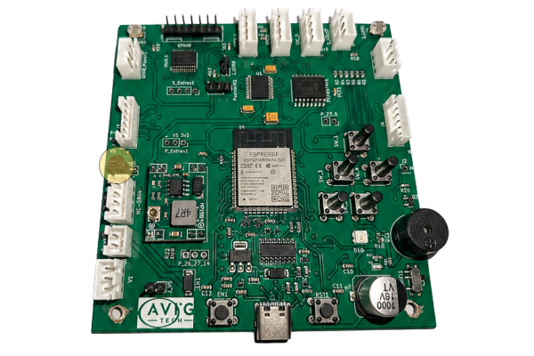
Sensor LM35dz
El sensor de temperatura LM35DZ es un sensor analógico de precisión que proporciona una salida de voltaje lineal directamente proporcional a la temperatura medida. A diferencia de otros sensores que requieren calibraciones complejas, el LM35DZ entrega una señal fácil de interpretar, lo que lo convierte en una excelente opción para proyectos educativos y de automatización. Características técnicas:
Rango de medición: aproximadamente 0 °C a +100 °C.
Tipo de salida: analógica.
Voltaje de operación: 4 V a 30 V.
Sensibilidad: 10 mV por cada grado Celsius.
Precisión típica: ±0.5 °C a 25 °C.
No requiere calibración externa.
Bajo consumo de corriente (aproximadamente 60 µA).
Uso en el RENABOT:
Medición de temperatura ambiental en actividades de exploración científica.
Monitoreo de temperatura en experimentos STEM relacionados con transferencia de calor.
Desarrollo de proyectos educativos de adquisición de datos utilizando entradas analógicas del ESP32.
Activación de alarmas, indicadores visuales o actuadores cuando se alcancen determinadas temperaturas.
Módulo Sensor MPU6050
{kind=link}
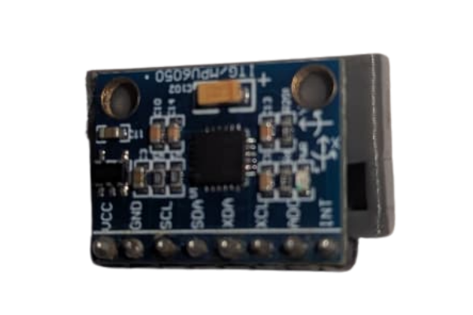
MPU6050
El MPU6050 es un sensor inercial de seis grados de libertad (6DOF) que integra un acelerómetro de tres ejes y un giroscopio de tres ejes en un solo dispositivo. Permite medir aceleraciones, inclinaciones y velocidades angulares, siendo ampliamente utilizado en aplicaciones de robótica, navegación y control de movimiento.
Características técnicas: - Sensor 6DOF (3 ejes de aceleración + 3 ejes de velocidad angular). - Comunicación: I2C. - Voltaje de operación: 3.3 V – 5 V. - Rango del acelerómetro: ±2g, ±4g, ±8g, ±16g. - Rango del giroscopio: ±250, ±500, ±1000, ±2000 °/s. - Convertidor ADC de 16 bits. - Frecuencia de actualización configurable. - Sensor de temperatura integrado.
Uso en el RENA-BOT: - Medición de inclinación y orientación del robot. - Implementación de sistemas de balanceo y estabilización. - Detección de movimientos y cambios de posición. - Desarrollo de algoritmos de navegación y control. - Actividades educativas relacionadas con sensores inerciales y procesamiento de señales.
Pines adicionales para sensores
{kind=link}
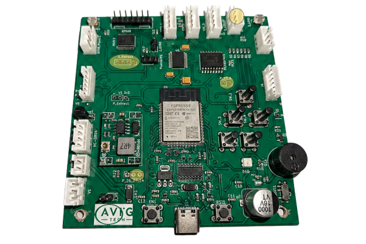
Extras
La placa de control del Renabot ha sido diseñada para permitir la expansión de nuevos sensores y módulos electrónicos según las necesidades de cada proyecto.
Gracias a la incorporación del multiplexor analógico 74HC4067, es posible conectar hasta 5 señales analógicas adicionales, permitiendo ampliar la capacidad de adquisición de datos sin consumir directamente más entradas analógicas del microcontrolador.
Esta característica facilita la integración de sensores como:
Sensores de humedad.
Sensores de gases.
Potenciómetros y otros dispositivos analógicos.
Adicionalmente, la placa deja disponibles varios pines de propósito general (GPIO) del microcontrolador ESP32-WROOM-32, los cuales pueden utilizarse para conectar nuevos sensores, actuadores o módulos de comunicación.
GPIO disponibles para expansión:
GPIO 23
GPIO 5
GPIO 14
GPIO 27
Estos pines pueden configurarse como entradas o salidas digitales y permiten implementar funcionalidades adicionales como:
Control de relés.
Lectura de sensores digitales.
Comunicación con módulos externos.
Control de LEDs y actuadores.
Desarrollo de proyectos personalizados.
Nota
Antes de conectar nuevos dispositivos, verifique la compatibilidad de voltajes y corrientes con las especificaciones del ESP32-WROOM-32 para evitar daños en la placa de control.
Actuadores
El Renabot incluye la siguiente lista de actuadores, los cuales permiten que el robot realice acciones físicas:
Motores DC con encoder
{kind=link}
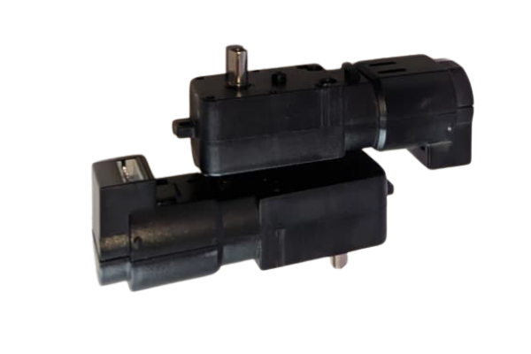
Los motores DC de cuadratura tipo TT con encoder Hall son los encargados del movimiento del robot. Incorporan un reductor mecánico y un encoder de cuadratura AB que permite medir velocidad y desplazamiento para implementar sistemas de control de precisión.
Características técnicas:
Voltaje nominal: 6 V.
Corriente nominal: 0.3 A.
Corriente de bloqueo: 1.1 A.
Relación de reducción: 1:45.
Velocidad de salida: 355 RPM ±5%.
Encoder Hall de cuadratura AB.
Resolución del encoder: 13 líneas.
Alimentación del encoder: 3.3 V – 5 V.
Máximo conteo por revolución de rueda: 2340 pulsos.
Uso en el RENABOT:
Desplazamiento mediante control diferencial.
Medición de velocidad y distancia recorrida mediante encoders.
Implementación de control PID de velocidad y posición.
Desarrollo de algoritmos de navegación, odometría y seguimiento de trayectorias.
Proyectos educativos relacionados con control de robots móviles y sistemas de retroalimentación.
Servomotor
{kind=link}
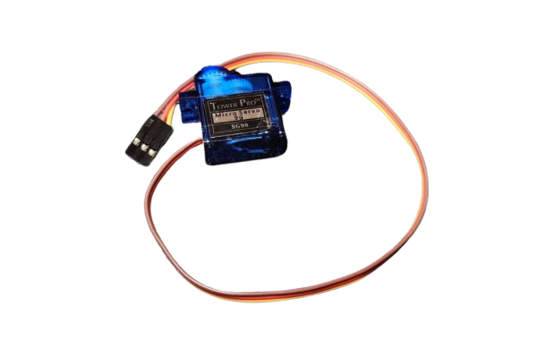
El servomotor SG90 es un actuador de pequeño tamaño que permite un movimiento angular 0° a 360°. Se controla enviando pulsos PWM desde el microcontrolador.
Características técnicas:
Voltaje de operación: 4.8 V – 6 V.
Ángulo de rotación: 360º
Torque: ~1.8 kg·cm.
Peso: 9 g.
Uso en el Renabot:
Control de un manipulador de objetos o gripper.
Movimiento de sensores (por ejemplo, rotación de un sensor ultrasónico).
Actividades para enseñar el control de PWM y actuadores de precisión.
Buzzer
{kind=link}
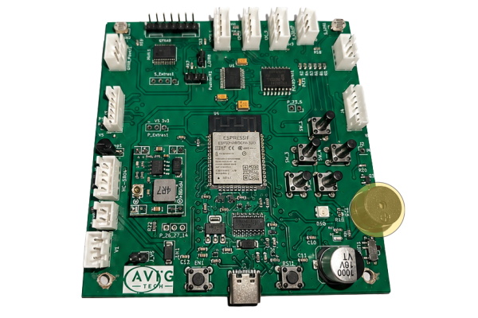
El buzzer pasivo es un actuador electrónico capaz de generar sonidos o tonos al recibir una señal de frecuencia desde el microcontrolador. A diferencia del buzzer activo, que emite un tono fijo con solo aplicarle voltaje, el buzzer pasivo requiere que se le envíen señales PWM para producir distintos sonidos y melodías.
Características técnicas:
Tipo: buzzer pasivo.
Voltaje de operación: 3.3 V – 5 V.
Control mediante señal PWM.
Tamaño compacto, fácil de integrar en la placa o en módulos externos.
Pantalla OLED
{kind=link}
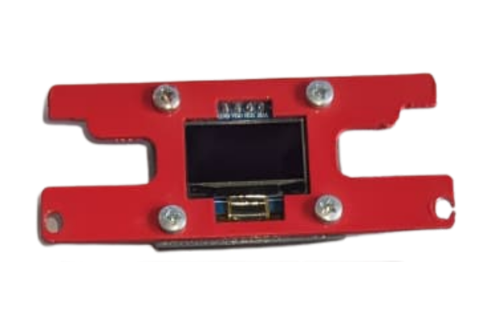
La pantalla OLED I2C de 0.96 pulgadas (128x64) es un dispositivo de visualización gráfica monocromática que utiliza tecnología OLED (Organic Light Emitting Diode), permitiendo mostrar texto, números, gráficos e iconos con alto contraste y bajo consumo energético.
Características técnicas:
Tamaño de pantalla: 0.96 pulgadas.
Resolución: 128 × 64 píxeles.
Comunicación: I2C.
Voltaje de operación: 3.3 V – 5 V.
Controlador: SSD1306.
Color de visualización: blanco monocromático.
Bajo consumo de energía.
Amplio ángulo de visión.
Uso en el RENA-BOT:
Visualización de información del sistema.
Monitoreo de variables y sensores en tiempo real.
Indicadores de estado de conexión y funcionamiento.
Presentación de mensajes, menús y configuraciones.
Desarrollo de interfaces gráficas educativas para proyectos de robótica y automatización.
LED RGB
{kind=link}
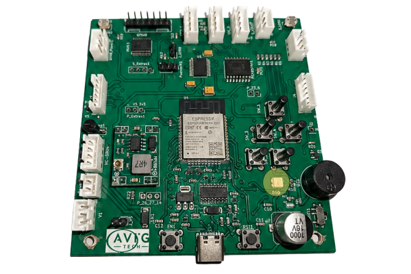
El SK6812 RGB SMD es un LED inteligente direccionable que integra en un solo encapsulado un LED RGB y un circuito controlador digital. Permite controlar individualmente el color y brillo de cada LED mediante una única línea de datos, facilitando la creación de efectos visuales dinámicos e indicadores luminosos programables.
Características técnicas:
Tipo: LED RGB direccionable.
Comunicación: señal digital de un solo cable (DIN).
Voltaje de operación: 3.5 V – 5.5 V.
Colores: rojo, verde y azul (RGB).
Control individual de color y brillo.
Encapsulado SMD compacto.
Conexión en cascada mediante DIN y DOUT.
Compatible con microcontroladores como ESP32 y Arduino.
Uso en el RENA-BOT:
Indicadores visuales de estado y funcionamiento.
Representación de alarmas y notificaciones mediante colores.
Efectos luminosos programables para actividades educativas.
Visualización del estado de sensores y comunicaciones.
Desarrollo de proyectos relacionados con control digital de iluminación.
Fuente de energía
El RENA-BOT utiliza una batería recargable LiPo (Polímero de Litio) de 2 celdas (2S), 7.4 V, 2200 mAh y 35C.
Características principales:
Voltaje nominal: 7.4 V (3.7 V por celda).
Capacidad: 1500 mAh, lo que ofrece un tiempo de operación adecuado para actividades educativas de corta y mediana duración.
Tasa de descarga: 35C, permitiendo suministrar la corriente suficiente para los motores y actuadores del robot sin caídas de voltaje.
Recomendaciones de seguridad:
Nunca descargar la batería por debajo de 6.0 V (3.0 V por celda), ya que puede dañarse permanentemente.
Utilizar siempre un cargador balanceado para LiPo, que garantice la seguridad y prolongue la vida útil de la batería.
Evitar golpes, perforaciones o exposición a altas temperaturas.
Durante el almacenamiento prolongado, mantener la batería en un nivel de carga de almacenamiento (~3.8 V por celda).
Truco
Con un uso responsable, esta batería puede tener una larga vida útil y es suficiente para múltiples sesiones educativas antes de requerir recarga.
Conexión de los componentes
El diseño SMD de la placa de contro con sus conectores JST XH y sumado al sistema de colores, permite identificar de forma sencilla la conexión de cada componente.
{kind=link}
continúa aprendiendo sobre el RENABOT en la sección Software y Programación